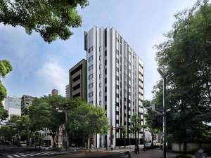
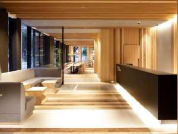
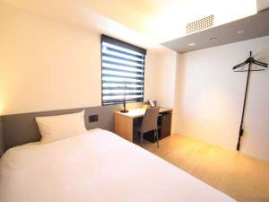
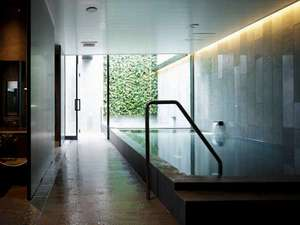
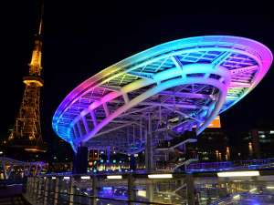

ホテル・アンドルームス名古屋栄
都市のなかにあるホテルで豊かな時間を過ごしていただくために、本当に必要なものはなんだろうか。その問いを繰り返すことで「hotel androoms」は生まれました。そうして辿り着いた答えが、それぞれの街にあわせて、そこにあったら嬉しい「&」をホテルにプラスしていくこと。リゾート地でも、郊外エリアでもない、都市のためのホテルをとことん考え抜くことで、これまでの常識にとらわれないホテルの姿を提案していきます。
| 写真 | INFORMATION | |
|---|---|---|
|  | 外観 | ―アクセス― 【電車】 名古屋市営地下鉄名城線・桜通線「久屋大通駅」2A出口より徒歩5分 【車】 ・名古屋駅より約10分 ・中部国際空港（セントレア）より約55分 ※当ホテルでは専用駐車場のご用意がありません。恐れ入りますが、近隣の駐車場をご利用ください。（提携駐車場はございません。） |
|  | ロビー | チェックイン: 15:00 チェックアウト: 10:00 |
|  | 客室 | 【客室常備品】 テレビ、冷蔵庫、電気ポット、煎茶、ドライヤー、シャワートイレ、歯ブラシ、シャンプー、 コンディショナー、ボディーソープ、タオル、ナイトウェア、スリッパ、加湿機能付き空気清浄機 【貸出アイテム】 アイロン、剃刀、ヘアブラシ 総客室数: 108室 |
|  | 施設 | 朝風呂に入ってから仕事に行きたいという方も、
観光から遅く帰って来られた方も。
お客様のご都合にあわせてお風呂に入っていただけるよう、
早朝6時から深夜26時まで入浴が可能となっています。
営業時間：6:00〜10:00／15:00〜26:00 |
| 朝食 | 朝食は、4つのサンドとサラダプレートの5種類からお選びください。 すべてのサンドには、サラダ、チップス、お好きなドリンクが付きます。 サラダプレートには、チップスとお好きなドリンクが付きます。 こだわりのバゲットは、店内で焼き上げた自家製です。 | |
|  | 周辺 | 名古屋テレビ塔/オアシス2 |
住所:愛知県名古屋市中区丸の内三丁目６番８号